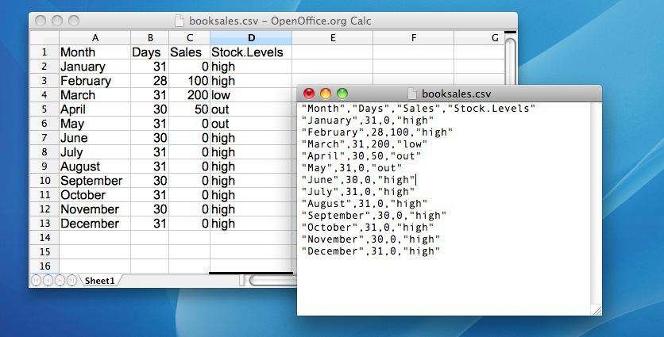

More Python Concepts
Contents
4. More Python Concepts¶
Form follows function
– Louis Sullivan
In the chapter on Getting started with Python our main goal was to, well, get started with Python. As we go through the book we’ll run into a lot of new Python concepts, which I’ll explain alongside the relevant data analysis concepts. However, there’s still quite a few things that I need to talk about now, otherwise we’ll run into problems when we start trying to work with data and do statistics. So that’s the goal in this chapter: to build on the introductory stuff from the last chapter, to get you to the point that we can start using Python for statistics. Broadly speaking, the chapter comes in two parts. The first half of the chapter is devoted to the “mechanics” of Python: installing and loading packages, managing the workspace, navigating the file system, and loading and saving data. In the second half, I’ll talk more about what kinds of variables exist in Python, and introduce three new kinds of variables: factors, data frames and formulas. I’ll finish up by talking a little bit about the help documentation in Python as well as some other avenues for finding assistance. In general, I’m not trying to be comprehensive in this chapter, I’m trying to make sure that you’ve got the basic foundations needed to tackle the content that comes later in the book. However, a lot of the topics are revisited in more detail later.
4.1. Using comments¶
Before discussing any of the more complicated stuff, I want to introduce the comment character, #. It has a simple meaning: it tells Python to ignore everything else you’ve written on this line. You won’t have much need of the # character immediately, but it’s very useful later on when writing scripts. However, while you don’t need to use it, I want to be able to include comments in my Python extracts. For instance, if you read this:
seeker = 3.1415 # create the first variable
lover = 2.7183 # create the second variable
keeper = seeker * lover # now multiply them to create a third one
print(keeper) # print out the value of 'keeper'
8.539539450000001
it’s a lot easier to understand what I’m doing than if I just write this:
seeker = 3.1415
lover = 2.7183
keeper = seeker * lover
print(keeper)
8.539539450000001
From now on, you’ll start seeing # characters appearing in the code extracts, with some human-readable explanatory remarks next to them. These are still perfectly legitimate commands, since Python knows that it should ignore the # character and everything after it. But hopefully they’ll help make things a little easier to understand.
4.2. Installing and importing¶
There is lots to love about Python as a programming language. Although it has its quirks and peculiarities like any language (programming or natural), it is relatively flexible and welcoming to newcomers, while still very, very powerful. But one of the best things about Python isn’t even the language itself, it is the rich ecosystem of code written by other people that you can use to make Python do things for you. These libraries or packages 1 contain code that people have written to solve particular problems, and then kindly made available for other people, like you and me, so that we don’t have to spend our time reinventing the wheel. By installing and importing libraries, you can achieve very complicated things with only a few lines of your own code, by standing on the shoulders of others. Just ask Cueball from the webcomic xkcd:2

When doing anything other than the very most basic forms of data analysis in Python, we will almost always need to use libraries. However, before we get started, there’s a critical distinction that you need to understand, which is the difference between having a package installed on your computer, and having a package imported in Python. I do not have any idea how many Python libraries are available out there, but it is a lot. Thousands. If you install Python on your computer, you won’t get all of them, just a handfull of the standard ones. Depending on how you install Python on your computer, you may have more or fewer libraries installed, but either way, there are thousands more out there that you do not currently have installed. So that’s what installed means: it means “it’s on your computer somewhere”. The critical thing to remember is that just because something is on your computer doesn’t mean Python can use it. In order for Python to be able to use one of your installed libraries, that library must also be “imported”. Basically what it boils down to is this:
A library must be installed before it can be imported.
A library must be imported before it can be used.
This two step process might seem a little odd at first, but the designers of Python had very good reasons to do it this way,3 and you get the hang of it pretty quickly.
I won’t get into the details of installing libraries here, simply because it is too much for me to tackle. If you are using Python in an online enviroment, you may already have access to all the libraries mentioned in this book. If you are working with Python on your own computer, the exact details of how you install packages may vary. If you want to use Python on your own computer, and are just getting started, I recommend Anaconda as a relatively easy way to install Python and get quick access to all the most common and important libraries.
4.2.1. What libraries does this book use?¶
In this book, I have made a concerted effort to limit the number of libraries needed. Often you will find that you can use different libraries to achieve the same results, and sometimes one of these may suit your needs more than another. This is something that can make doing analysis by code rather than pointing and clicking in a dedicated statistics program a bit off-putting; in Excel, there is usually only one way to do things, while in Python, there are many. I think this is part of what makes doing statistics using code better, though: you can make your own informed choices, and do exactly the analysis you want to do; you don’t have to accept some piece of software’s default settings. However, the point of this book is to get you started doing data analysis and statistics in Python, not to show you all the different ways you could achieve the same goal, so in an effort to keep things simple, I have tried to limit the libraries used in this book to a few of the most important and most common ones for doing statistics with Python. The libraries we will return to again and again are: numpy, pandas, matplotlib, seaborn, statistics, math, and pingouin, but I may use others as well, as needed. Other powerful libraries that I won’t make much use of in this book, but that you will probably end up using at some point if you continue to do statistics with Python include scipy, statmodels, and scikit-learn.
4.2.2. How will I import libraries in this book?¶
Once you import a library into Python’s active memory, you don’t need to do it again. In writing this book, each chapter is a python file 4. So, if I have imported e.g. numpy early in the chapter, I don’t need to do it again in a later section of the chapter. But, normally I will, because I want the code snippets in this book to be as easy as possible to copy and paste into your own computer. If I don’t put the import command at the top of the snippet, and you have not already imported the library, then you might copy and paste my code into your computer and get an error message. Then again, sometimes I might forget to put the import statement in, or I might think it should be obvious, or I might just get lazy, so make sure to keep an eye out for this!
4.2.3. Importing libraries¶
Assuming you have the libraries you need installed on your computer, or can access them in the virtual Python environment you are using in your browser, you will need to import them before you can actually use them. So, for instance, if I want to find the sum of five numbers, I can write
numbers = [4, 5, 1, 2, 6]
sum(numbers)
18
because the authors of Python felt that adding numbers together was such a basic thing that there should be a built-in command for it. At least, I assume so. I don’t really know what the authors of Python thought. But, oddly enough, Python doesn’t have a built-in command called “mean”. So if I want to know the mean of those same five numbers, I cannot just write
mean(numbers)
---------------------------------------------------------------------------
NameError Traceback (most recent call last)
Input In [4], in <cell line: 1>()
----> 1 mean(numbers)
NameError: name 'mean' is not defined
because Python doesn’t know what mean, er, means. Luckily, we don’t have to resort to first finding the sum and then dividing by the number of numbers, because there are libraries that do have built-in commands for finding means. The statistics library is one. To use the commands in this library, we first have to import it. This gives us access to all the many useful commands in the statistics library, one of which is mean:
import statistics
numbers = [4, 5, 1, 2, 6]
statistics.mean(numbers)
3.6
You probably noticed the . in the code above. This is the way we tell Python that we want to use a command called mean which is found inside the library statistics. Without the ., even though we have imported statistics, which has a command called mean, we still can’t just write mean(numbers). We have to tell Python where to look for this command. This all seems very cumbersome, but it’s really not so bad, there are good reasons for doing it this way5, and you will get used to it fairly quickly.
One of the ways in which Python is quite flexible is that it gives you some options in terms of how you import libraries. More precisely, you can:
Choose to import only a portion of a library
Rename libraries or portions of libraries when importing
Let’s say we don’t want to import the entire statistics library — we only want the mean command. We can achieve this like this:
from statistics import mean
Why would we want to do this? Well, one good reason is that now we can simply write mean(numbers); we no longer have to write out statistics.mean(numbers):
numbers = [4, 5, 1, 2, 6]
mean(numbers)
3.6
Is this the height of laziness? Maybe. But if you start writing the same thing over and over again, saving a few characters here and there is pretty sweet. And this brings us to the other import option: renaming libraries. It is common practice in Python to give libraries abbreviations when we import them. Many of the most common libraries have conventional abbreviations, although you could use anything you like. Thus, you will often see e.g.
import numpy as np
import seaborn as sns
This is very convenient, but be careful: if you e.g. import numpy as np, then Python will only recognize it as np, at least for the time your code is in Python’s active memory. Also, although you can use whatever abbreviations you like, I highly recommend sticking to the conventional ones, for your sake and for the sake of others trying to read your code. It’s kind of fun the first time to do something like
import statistics as why_you_gotta_be_so
why_you_gotta_be_so.mean(numbers)
3.6
but good code should be easy to read by yourself and others, and if you start playing too fast and loose with renaming, it starts to get less clear what’s going on.
4.3. Listing the objects in active memory¶
Let’s suppose that you’re reading through this book, and what you’re doing is sitting down with it once a week and working through a whole chapter in each sitting. Not only that, you’ve been following my advice and typing in all these commands into Python. So far during this chapter, you’d have typed quite a few commands, although not all of them actually created variables.
An important part of learning to program is to develop the ability to keep a mental model of what Python knows and doesn’t know at any given time active in your mind. This sounds very abstract, and it is, but as you become more familar with coding I think you will see what I mean. I won’t dwell on this here, but it may be useful to take a quick peak at what I mean. If you are working in e.g. a Jupyter Notebook (and I do suggest you do this, at least at first), then by typing %who you can see a list of all the variables that Python is currently aware of. So, in my case, I get the following:
%who
keeper lover mean np numbers seeker sns statistics why_you_gotta_be_so
Here we can see variables that we defined, like keeper and lover, and also libraries that we imported (and renamed), like np and sns, as well as the library statistics which I then ill-advisedly re-imported and renamed why_you_gotta_be_so. To see more details on these variables, we can type %whos
%whos
Variable Type Data/Info
-------------------------------------------
keeper float 8.539539450000001
lover float 2.7183
mean function <function mean at 0x111b6a4d0>
np module <module 'numpy' from '/op<...>kages/numpy/__init__.py'>
numbers list n=5
seeker float 3.1415
sns module <module 'seaborn' from '/<...>ges/seaborn/__init__.py'>
statistics module <module 'statistics' from<...>ython3.10/statistics.py'>
why_you_gotta_be_so module <module 'statistics' from<...>ython3.10/statistics.py'>
This tells us that e.g. keeper is a floating-point decimal number with the value 8.539539450000001, and shows us the true names of the objects we have renamed on import. These commands that start with a % sign, by the way, are called “magic” commands, and can only be used in environments like Jupyter, which support them. If you are not working in such an environment, you can use the command dir(), which achieves the same thing, but will also show you lots of information you probably aren’t interested in at this stage.
4.3.1. Removing variables from the workspace¶
Looking over that list of variables, it occurs to me that I really don’t need them any more. I created them originally just to make a point, but they don’t serve any useful purpose anymore, and now I want to get rid of them. I’ll show you how to do this, but first I want to warn you – there’s no “undo” option for variable removal. Once a variable is removed, it’s gone forever. Most of the time this doesn’t matter, though, because we still have the code we used to create the variable, so unless you delete that too, you can always just re-run the cells in your Jupyter Notebook, and Python will re-make your variables for you, just like they were before. But quite clearly we have no need for these variables any more, so we can safely get rid of them by using the del() command.
del(keeper, lover)
With %who or dir() we can check that they are gone.
%who
mean np numbers seeker sns statistics why_you_gotta_be_so
If you want to remove all the variables in memory, and you are working in a Jupyter environment, then %reset is a handy way to do this, although I must say that in practice I rarely, if ever, have a need to remove variables from memory. There is usually no harm in them sitting around unused, and if you define a new variable with the same name as an old one, it will just write over the old variable with the same name.
4.4. Loading and saving data¶
There are several types of files that are likely to be relevant to us when doing data analysis, and there are two in particular that are especially important from the perspective of this book:
Comma separated value (CSV) files are those with a .csv file extension. These are just regular old text files, and they can be opened with almost any software. It’s quite typical for people to store data in CSV files, precisely because they’re so simple.
Script files are those with a .py file extension or an .ipynb extension. These aren’t data files at all; rather, they’re used to save a collection of commands that you want Python to execute later. They’re just text files, but we won’t make use of them until later.
In this section I’ll talk about how to import data from a CSV file. First though, we need to make a quick digression, and talk about file systems. I know this is not a very exciting topic, but it is absolutely critical to doing data analysis. If you want to work with your data in Python, you need to be able to tell Python where the data is located.
4.4.1. Filesystem paths¶
In this section I describe the basic idea behind file locations and file paths. Regardless of whether you’re using Window, macOS or Linux, every file on the computer is assigned a (fairly) human readable address, and every address has the same basic structure: it describes a path that starts from a root location, through as series of folders (or if you’re an old-school computer user, directories), and finally ends up at the file.
On a Windows computer the root is the physical drive 6 on which the file is stored, and for most home computers the name of the hard drive that stores all your files is C: and therefore most file paths on Windows begin with C:. After that come the folders, and on Windows the folder names are separated by a \ symbol. So, the complete path to this book on my Windows computer might be something like this:
C:\Users\ethan\pythonbook\book\LSP.pdf
and what that means is that the book is called LSP.pdf, and it’s in a folder called book which itself is in a folder called ethan which itself is … well, you get the idea. On Linux, Unix and Mac OS systems, the addresses look a little different, but they’re more or less identical in spirit. Instead of using the backslash, folders are separated using a forward slash, and unlike Windows, they don’t treat the physical drive as being the root of the file system. So, the path to this book on my Mac might be something like this:
/Users/ethan/pythonbook/book/LSP.pdf
So that’s what we mean by the “path” to a file, and before we move on, it is critical that you learn how to copy the path to a file on your computer so that you can paste it into Python. There are (again!) multiple ways to do this on the various operating systems, and it doesn’t really matter which method you use. A quick search will lead you to many many online tutorials; just find a method that works for you, on your computer. Even if you are working in a virtual Python environment in the browser (such as Google Colab), you will need some concept of file structure to navigate to your data and scripts.
4.4.2. Loading data from CSV files into Python¶
One quite commonly used data format is the humble “comma separated value” file, also called a CSV file, and usually bearing the file extension .csv. CSV files are just plain old-fashioned text files, and what they store is basically just a table of data. This is illustrated below, which shows a file called booksales.csv that I’ve created. As you can see, each row corresponds to a variable, and each row represents the book sales data for one month. The first row doesn’t contain actual data though: it has the names of the variables.
{kind=link}
As is often the case, there are many different ways to get the data from a CSV file into Python so that you can begin doing things with it. Here we will use the pandas library, which happens to have a handy command called read_csv() which does just what it says.
We can’t just read the data in willy-nilly, though. We need some place to put it. As you may have already guessed, we need to define a variable to put our data into. We haven’t talked about variable types yet, and now is not the time, but let it suffice to say that there are different kinds of variables, and some of them can store structured data like the rows and columns in a CSV file. pandas calls this kind of variable a “dataframe”. You can name your dataframe whatever you like, of course, but by convention they are often called “df”, so we’ll do that too. Thus:
# import pandas, and call it "pd" for short
import pandas as pd
# make a new dataframe variable, and use the "read_csv" command from the pandas library to put the contents
# of the file located at "/Users/ethan/Documents/GitHub/pythonbook/Data/booksales.csv" in the dataframe df
df = pd.read_csv("/Users/ethan/Documents/GitHub/pythonbook/Data/booksales.csv")
Here I have put the full path into the parentheses following pd.read_csv, but often I prefer to save the path as a variable, and put that variable into the parentheses instead, like this:
import pandas as pd
file = "/Users/ethan/Documents/GitHub/pythonbook/Data/booksales.csv"
df = pd.read_csv(file)
Either way works, but I think this looks nicer, and it also has an additional advantage: it makes the code more versatile. Right now we are just loading a single CSV, but if we want to load many CSV files, it might be useful to write a loop that puts different paths into the same variable file. But that is a discussion for another time.
4.4.3. Saving a dataframe as a CSV¶
Sometimes we create new dataframes using Python. Maybe the CSV we loaded had lots of information that we don’t need, or maybe we have loaded several CSV’s in, taken a few columns of data from each one, and then combined these into a new dataframe. Or perhaps we have done some calculations on the original data and added a column with e.g. the sum of each row. If we want to save this new dataframe as a csv, pandas has a command for that as well:
df.to_csv('/Users/ethan/Desktop/my_file.csv')
Every pandas dataframe has the built-in ability to be exported as a CSV file. We just need to tell Python what the new file should be called, and where we want it to go in our filesystem. Pretty straightforward, really.
4.5. Useful things to know about variables¶
In the chapter on Getting started with Python, I talked a about variables, how they’re assigned and some of the things you can do with them, but there are a lot of additional complexities. That probably comes as no great surprise, and we can’t go over all of these now, but this section is basically just a bunch of things that I want to briefly mention, that don’t really fit in anywhere else. In short, now I’ll talk about several different issues in this section, which are only loosely connected to one another.
4.6. Variable types¶
As we’ve seen, Python allows you to store different kinds of data. We have seen variables that store text (strings), numbers (integers or floats), and even whole datasets (dataframes). These are just three of the many different types of variable that Python can store. Other common variable types in Python include dictionaries, lists, and tuples. It’s important that we remember what kind of information each variable stores (and even more important that Python remembers) since different kinds of variables allow you to do different things to them. For instance, if your variables have numerical information in them, then it’s okay to add them together:
x = 1 # a is a number
y = 2 # b is a number
z = x + y
print(z)
3
If they contain character data (strings), Python will still let you add the variables, but the outcome might be unexpected:
x = "1" # x is string, as indicated by the quotation marks
y = "2" # y is string, as indicated by the quotation marks
x + y
'12'
To us, there isn’t really that big a difference between 1 and “1”, but to Python, these are entirely different classes of things.
4.6.1. Checking variable types¶
Okay, let’s suppose that I’ve forgotten what kind of data I stored in the variable x (which happens depressingly often). Python provides a function that will let us find out: type()
x = "hello world" # x is text (aka a "string")
type(x)
str
import pandas as pd
file = "/Users/ethan/Documents/GitHub/pythonbook/Data/booksales.csv"
x = pd.read_csv(file) # x is a dataframe
type(x)
pandas.core.frame.DataFrame
x = 100 # x is an integer
type(x)
int
x = 3.14 # x is a floating-point decimal
type(x)
float
Exciting, no? Trust me, you’ll need to do this more often than you might think.
Since Python packages can add their own variable types (like the pandas.core.frame.DataFrame variable we saw above), there can be quite a few different variable types in Python. But it is worth spending a little time getting to know the standard variable types in Python, so here I’ll introduce you to a few of the usual suspects: ints, floats, strings, dicts, lists, and sets. These variable types are like the basic building blocks in Python, and once you become familar with them and get to know their quirks, foibles, and properties, everything else in Python becomes so much easier.
I KNOW I HAVEN’T FINSIHED THIS SECTION YET. I’LL COME BACK AND DO IT, I PROMISE!
4.7. Regular variables and collection variables¶
There are two main types of variable in Python, which I will call “regular variables” and “collection variables”.
The regular variables are:
Integers
Floats
Strings
The collection variables are:
Lists
Tuples
Sets
Dictionaries
As I mentioned, there are also other kinds of collection variables, such as pandas dataframes provide more structure and allow for more complex, organized data storage and manipulation. But we’ll get to these in due time, as needed. For now, I want to introduce you to the basic set of variables in Python.
4.8. Regular variables¶
4.8.1. Intergers¶
We have already spent some time with one of Python’s most common variable types, the interger. Integers are pretty straightforward: they are whole numbers, like 2, 7, 4392, 0, and -34. There’s not so much more to say about them. You can do all the usual sorts of things with integers that you might expect: you can add them, subtract them, multiply them, etc. To give a some quick examples:
cows = 75
pigs = 21
hens = 7
animals_total = cows + pigs + hens
print("Total number of animals:", animals_total)
Total number of animals: 103
4.8.2. Floats¶
On their face, floats are also pretty straightforward: they’re decimal fractions, like 0.234, 0.333, or -0.000003. Most of the time, this level of understanding is all you need. Occasionally, though, you will run into some confusing behavior with floats, so it is worth saying just a few more words about them. There are two issues with floats which we should at least be aware of:
Computers store decimal fractions as base 2 fractions (binary), not base 10, the way we are used to thinking of them.
There are more than one way to round fractions, and Python may not round fractions the way you expect.
Let’s start by looking at some decimal fractions:
a = 1/10
print(a)
0.1
a = 1/3
print(a)
0.3333333333333333
Nothing odd here. In base 10 math, 1 can be equally divided into ten parts, and the answer is 0.1
But to our computers, the answer to 1 divided by 10 is stored as a float variable, and stored in base 2. Which means, that to Python 1 divided by 10 is actually 0.0001 1001 1001 1001 1001 1001 1001 1001 1001 1001 1001 1001 1001 1001 1001 1001 1001 1001 1001 1001 1001 1001 1001 1001 1001 1001….
That is, to the computer, 1/10 is actually an infinitely repeating series, just like the answer to 1/3 is in the base 10 math we are used to. So when Python shows us that 1/10 = 0.1, it is really just rounding up, so that the answer looks like what we expect to see. This means that decimal fractions are not as precise as we might think, and explains why the answer Python gives us when we add decimals together might be surprising:
.1 + .1 + .1
0.30000000000000004
This answer makes no sense if we think that 0.1 is exactly 0.1, but makes more sense if we understand that to Python, 0.1 is just an approximation of the answer to 1/10. Now, most of the time this is not going to matter much, but it could make a difference, so it is good to be aware of it.
Now, here’s the other thing to be aware of with floats in Python. Often when we have a number with a decimal, we want to round it. So rather than 1.5, we might want to round to a whole number:
round(1.5)
2
But, although most of us who aren’t mathematicians or computer scientists or whatever can go blissfully through life being unaware of it, there are many different strategies for rounding numbers. Python uses the one known as “rounding half to even”, which means that when there is a tie, that is, when the number we want to round is exactly halfway between two integers, Python will round to the nearest even number. Now, unlike 0.1, which as we saw above, is stored as an approximation of an infinitely long series in base 2, 0.5 is actually stored as a precise number in base 27, which means that even to Python, 1.5 is exactly halfway between 1 and 2, and 2.5 is halfway between 2 and 3. And, when deciding ties Python rounds to the neares even number, we can get some surprising results:
print('1.5 rounded is:',round(1.5))
print('2.5 rounded is:',round(2.5))
1.5 rounded is: 2
2.5 rounded is: 2
Great, Python. Just great -_-
We musn’t get off an any further tangents here, because most of the time we don’t have to think about these bits of esoterica, but I will mention just one last oddity about floats that you might conceivably run into at some point. Let’s say we add the following two numbers:
1 + 1.000000000000001
2.000000000000001
So far so good. Now say we put in just one more zero:
1 + 1.0000000000000001
2.0
Ugh. Really? Yup. If your computer has a 64-bit processor (and these days, it probaby does), there is a hard limit on the number of decimal places it can store. If you like, play around with it yourself, and see where these limits lie. Just for “fun”, here are a few last examples:
print(1 + 1.0000000000000001)
print(1 + 1.000000000000001)
print(1 + 1.0000000000000009)
2.0
2.000000000000001
2.000000000000001
Alright. Enough floats. Mostly they work the way you would expect, but if they don’t, now you know some of the possible reasons. Time to move on to something more fun: strings!
4.8.3. Strings¶
Strings are variables that store characters, like “g”, “h”, “a”, and “p”, but also “cat”, “apple”, and “supercalifragilisticexpialidocious”. Strings can also be things like “$”, “,”, “;” and “?”. Somewhat confusingly, strings can also be things like “3”, “42”, and “-8374.87”. Maybe it is helpful to think of strings as being one of the roles these symbols can play, just like a book could be a gift, a paperweight, a doorstop, or a weapon. Ok, maybe that’s not so helpful after all. Let’s try some examples instead:
a = "I am a string"
print(a)
I am a string
a = "I am a "
b = "string"
c = a + b
print(c)
I am a string
# These numbers are integers
a = 1
b = 2
print(a + b)
3
# These numbers are stringss
a = '1'
b = '2'
print(a + b)
12
So we can add strings together, but the result is different than when we add integers together. To Python, the numbers in the cell above are just the characters 1 and 2, not the values 1 and 2. So it just sticks them together, just like it would any other strings, if you add them.
Now, while we can add two strings together, we can’t multiply two strings by each other, or subtract, or divide. What would that even mean. We can multiply strings by an interger, though:
a = 'cat'
print(a*5)
catcatcatcatcat
There are many more fun things we can do with strings; many more than I will go into here. I will give a few examples, though, just to whet your appetite:
a = 'a long time ago in a galaxy far far away'
a.title()
'A Long Time Ago In A Galaxy Far Far Away'
a.upper()
'A LONG TIME AGO IN A GALAXY FAR FAR AWAY'
a.split()
['a', 'long', 'time', 'ago', 'in', 'a', 'galaxy', 'far', 'far', 'away']
a.split('a')
['', ' long time ', 'go in ', ' g', 'l', 'xy f', 'r f', 'r ', 'w', 'y']
'X'.join(a)
'aX XlXoXnXgX XtXiXmXeX XaXgXoX XiXnX XaX XgXaXlXaXxXyX XfXaXrX XfXaXrX XaXwXaXy'
a.replace('galaxy', 'suburb')
'a long time ago in a suburb far far away'
a.replace('a', 'A')
'A long time Ago in A gAlAxy fAr fAr AwAy'
a.replace(' ', '_')
'a_long_time_ago_in_a_galaxy_far_far_away'
Python is a fantastic tool for working with strings, which makes it the language of choice for very many people working with text data of any sort. But now it is time to move on to collection variables.
4.9. Collection variables¶
Collection variables provide a way to, well, collect information. We’ll look at these in turn, starting with lists.
4.9.1. Lists¶
Lists are just what they sound like: a single variable that contains a list of items. Just about any variable type you can think of can be listed in a Python list:
shopping = ["apples", "pears", "bananas"] # a list strings
scores = [90, 65, 100, 82] # a list of integers
mixed = ["cats", 7, 309.42] # a list of mixed strings, integers, and floats
combined = [shopping, scores, mixed] # a list of lists!
print(shopping)
print(scores)
print(mixed)
print(combined)
['apples', 'pears', 'bananas']
[90, 65, 100, 82]
['cats', 7, 309.42]
[['apples', 'pears', 'bananas'], [90, 65, 100, 82], ['cats', 7, 309.42]]
Let’s say I am so enamored with Python that I actually decided to keep my shopping list in a Python list. Seems unlikely, I know, but bear with me. Later, I realize I have forgotten what I wrote on the list. This does kind of sound like me, actually. To see the contents of the entire list, I can use print(), the way I did above. But let’s say I only want to see the second item on the list. Python has a way to access specific items in lists, but it will seem strange at first!
Let’s take a look. To access an item in a list, we need to know its index, that is, its location in the list. We indicate an index with square brackets. In Python, this is known as slicing. So to find the item with the index 2 in my shopping list, I can write shopping[2], like so:
shopping = ["apples", "pears", "bananas"]
shopping[2]
'bananas'
What?!?!? We asked for item 2, and Python gives us “bananas”? But “bananas” is the third item in the list?!?! What’s going on?
The simple answer for this is that Python uses “zero-based indexing”: basically, Python starts counting at zero. So “apples” is in the zeroeth position, “pears” is in the first position, and “bananas” is in the second position. If it helps, maybe think of it like buildings in Europe that start with the ground floor, and then go up to the first floor, etc.
Now just when you have started to get used to zero-indexing, try negative indexing on for size. We can also count backwards from the end of the list, by using negative indices such as shopping[-2] But be careful: when you use negative indexing, Python behaves the way you might have originally expected it to. Thus, shopping[-1] will return “bananas”, shopping[-2] will give us “pears”, etc. That’s just how Python is.
At some point I stumbled on the visualization below. Unfortunately, I can no longer remember where I found it, so I cannot attribute it, but you may find it helpful when trying to remember how indexing works in Python. But probably the best way is to just try it out, and pretty soon you’ll get used to it.
# +---+---+---+---+---+---+
# | P | y | t | h | o | n |
# +---+---+---+---+---+---+
# 0 1 2 3 4 5 6
# -6 -5 -4 -3 -2 -1
4.9.2. Finding the length of a list¶
One last thing on lists for now: it can often be useful to check how many items are in your list. With the toy examples we are using here, of course, it is easy to see how long the list is, because we just typed in the items ourselves. But in actual data analysis, we often deal with very long lists that contain an unknown number of items. In these cases we can use len() to check how long the list is:
len(shopping)
3
4.10. Tuples¶
Tuples are similar to lists, but they have one important difference: you can mess around and change what is inside of lists, but you can’t do that with tuples. In programmer-ese, we can say that lists are mutable, but tuples are immutable. Once you make one, you can’t change it (unless you just make a new one, with the same name, in which case you’re now technically dealing with a new tuple, so you didn’t really change it all).
While Python uses square brackets ([ ]) to indicate lists, it uses regular old parentheses plus a comma to indicate tuples. Let’s take a look:
shopping_list = ["apples", "pears", "bananas"]
shopping_tuple = ("apples", "pears", "bananas")
We can still get data out of tuples in the same way we get it out of lists, by slicing them, using square brackets and an index value:
shopping_tuple[0]
'apples'
Now, if I decide I don’t want apples after all, but want grapes instead, I can just re-assign the new value to the appropriate position in the list, replacing “apples” with “grapes”
shopping_list[0] = 'grapes'
print(shopping_list)
['grapes', 'pears', 'bananas']
Don’t try that kind of funny business with a tuple, though. It won’t have any of it:
shopping_tuple[0] = 'grapes'
print(shopping_tuple)
---------------------------------------------------------------------------
TypeError Traceback (most recent call last)
Input In [9], in <cell line: 1>()
----> 1 shopping_tuple[0] = 'grapes'
2 print(shopping_tuple)
TypeError: 'tuple' object does not support item assignment
One more detail, before we leave tuples. Remember I said that Python uses parentheses and a comma to indicate that something is a tuple? I meant it. If we try to make a tuple that only has one item, you might think we could do it like this:
a = ('pears')
type(a)
str
But, as you can see, Python does not think this is a tuple. It just sees it as a string. To make a tuple with only item, we still need the comma:
a = ('pears',)
type(a)
tuple
print(a[0])
pears
Ah. Now Python understands that we want to make a tuple.
4.11. Dictionaries¶
Dictionaries are a very useful variable type in Python, but it may take you a while to appreciate their usefulness. Trust me, though. Once you begin to appreciate what dictionaries can do, you will learn to love them. But, like anything (or anyone), before you can truly love dictionaries, you have to get to know them.
In essence, dictionaries are very simple. They consist of two parts: keys and values. You can think of the key as the word you look up in the dictionary, and the value as the definition. The syntax for defining a dictionary is {key: value}. A simple key-value pair could be {‘name’: ‘Ethan}.
me = {'name': 'Ethan'}
print(me['name'])
Ethan
Of course, most dictionaries will have more than one entry. If were to make a dictionary with information about my pet, for instance, I might write:
my_pet = {'name': 'D2',
'species': 'cat',
'likes': 'sleeping',
'dislikes': 'loud noises'}
Now,if I can’t remember what kind of animal my pet is, I can always consult my dictionary:
my_pet['species']
'cat'
Dictionary values can be more than just a single string, though. Let’s say I want to plan out my week using Python (because that would be a normal thing to do!) I can make a dictionary called my_week, and include entries for shopping and a to-do list.
my_week = {'shopping': ['apples', 'pears', 'bananas'],
'todo': ('sleep', 'teach', 'feed the cat')}
print(my_week['shopping'])
['apples', 'pears', 'bananas']
print(my_week['todo'])
('sleep', 'teach', 'feed the cat')
Notice that I have made the value for shopping a list, but the value for todo is a tuple. That might be because I want to keep open the option to change items in my shopping list, but want to keep my to-do list fixed. Or it might just be because I wanted to demonstrate that dictionary values can be all kinds of different variable types.
4.12. Combining variable types¶
list of tuples, tuples, of lists, lists of lists, etc.
4.12.1. Indexing and slicing¶
Ok, I know I really need to write this section!!
More on slices (e.g. start, end, steps)
4.13. Summary¶
This chapter continued where the previous chapter left off. The focus was still primarily on introducing basic Python concepts, but this time at least you can see how those concepts are related to data analysis:
Installing and importing libraries. Knowing how to extend the functionality of Python by installing and using libraries is critical to becoming an effective Python user
Loading and saving data. Finally, we encountered actual data files. Loading and saving data is obviously a crucial skill, this was dealt with here.
Filesystem paths. This section dealt very briefly with the concept of filesystems. Mostly, I just told you what a filesystem path is, and left it up to you to figure out how to find paths on your machine.
Useful things to know about variables. In this section, we talked about variable types, with a special focus on lists and dataframes. There is much more to say about these topics, but hopefully this is enough to get you started.
Taken together, the chapter on Getting Started with Python and More Python Concepts provide enough of a background that you can finally get started doing some statistics! Yes, there’s a lot more Python concepts that you ought to know (and we’ll talk about some of them in the chapters on Data Wrangling and Basic Programming, but I think that we’ve talked quite enough about programming for the moment. It’s time to see how your experience with programming can be used to do some data analysis…
4.14. Sets¶
- 1
There are some subtle differences between libraries, packages, and modules, but we don’t need to concern ourselves with these here, and I may well mix up these words in the text. The key thing is, they are bits of code that we need to import to make stuff happen in Python.
- 2
https://xkcd.com/353/
- 3
Basically, the reason is that there are thousands of libraries, and probably thousands of authors of libraries, and no-one really knows what all of them do. Keeping the installation separate from the loading minimizes the chances that two libraries will interact with each other in a nasty way, like using the same name for different things.
- 4
Well, actually it is an
.ipynbfile, but let’s not bicker and argue about who killed who.- 5
Chiefly among them, this helps avoid unpleasant situations where we may have imported two different libraries that each contain a function with the same name, but which do different things, or worse yet, do different things but appear to do the same thing, which could really get us in trouble!
- 6
Well, the partition, technically.
- 7
0.5 is actually stored as 0.1 in base 2. Ha ha! Isn’t math fun?